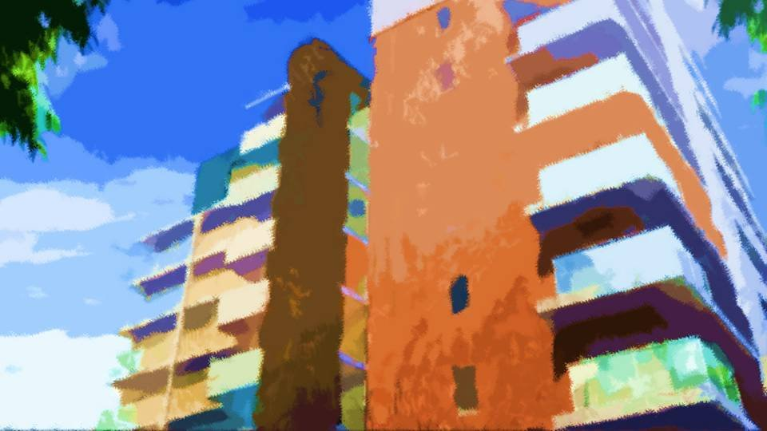
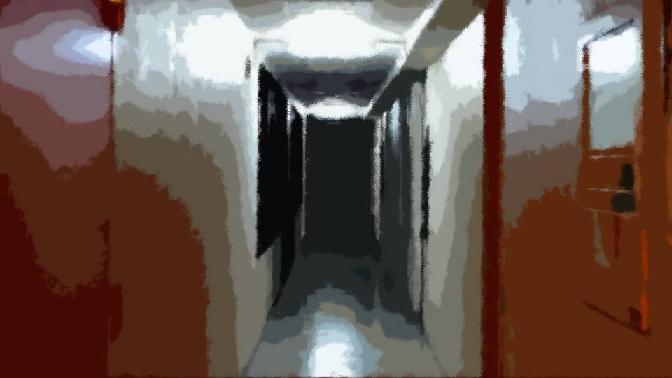
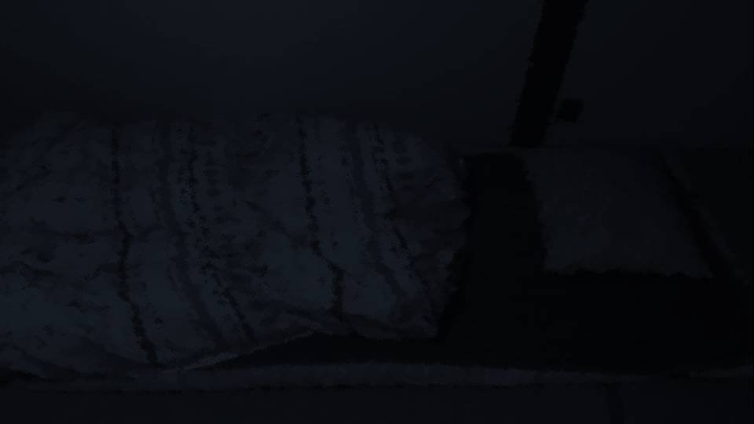
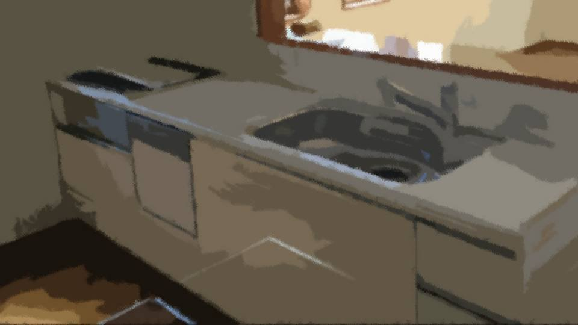
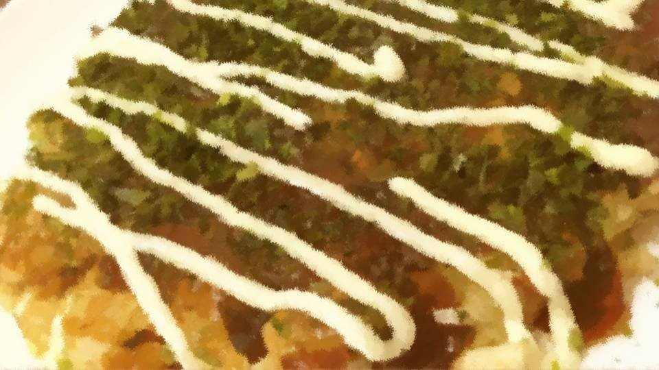
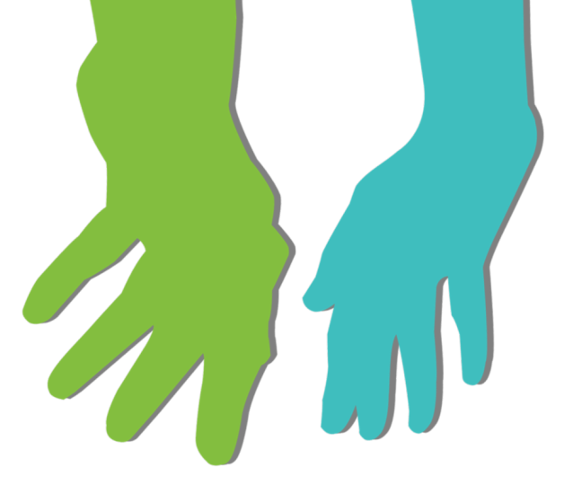
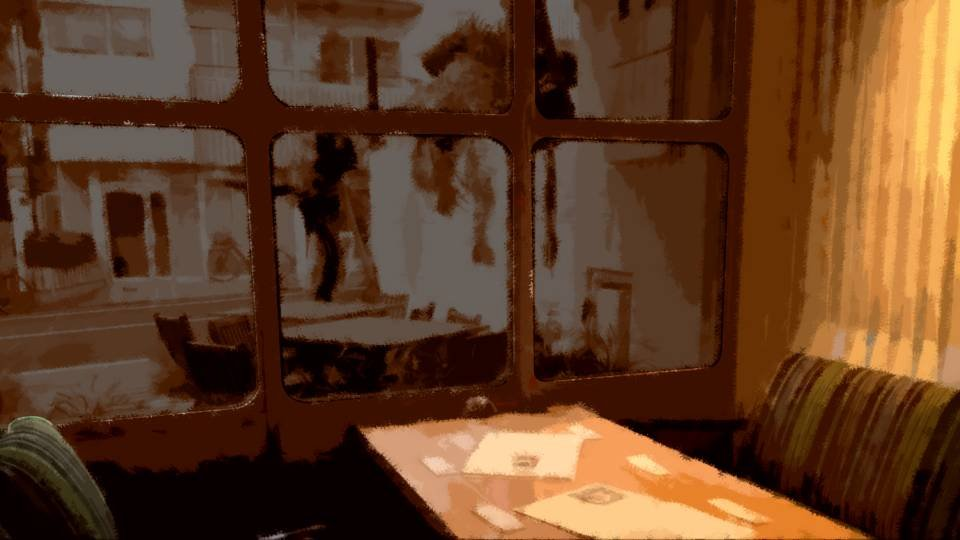
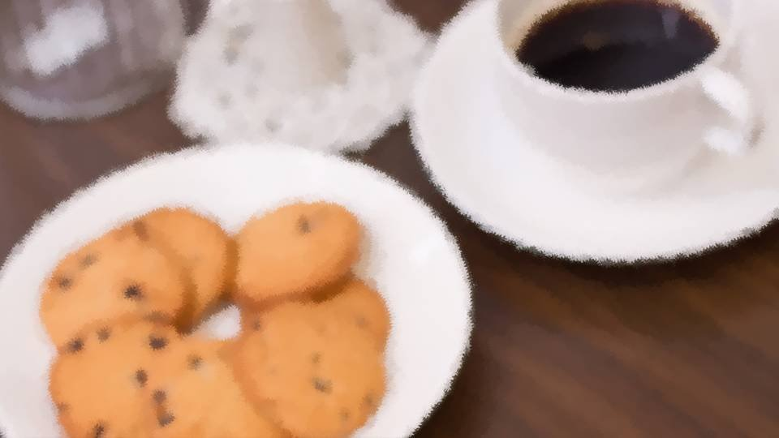

鏡(わたし)


「美冬……あの後、どうなったの？ 栄一郎さん、寝込んじゃったらしいけど」
栄一郎さんと会った次の日、茜と例の喫茶店で待ち合わせていた。
「うぎゅ……栄一郎さん……」
結局私は栄一郎さんの連絡先も聞けず、追いかけることもできず。
すぐに茜と会う約束を取り付けた。
栄一郎さんと会った次の日、茜と例の喫茶店で待ち合わせていた。
「うぎゅ……栄一郎さん……」
結局私は栄一郎さんの連絡先も聞けず、追いかけることもできず。
すぐに茜と会う約束を取り付けた。
「やっぱり……栄一郎さんはダメ？」
「そ、そんなことないよ！ あの人、私とそっくりなの……。 だから栄一郎さんの気持ち、痛いほど分かり過ぎちゃって……」
「それで寝込むって……どういうこと？」
「そ、そんなことないよ！ あの人、私とそっくりなの……。 だから栄一郎さんの気持ち、痛いほど分かり過ぎちゃって……」
「それで寝込むって……どういうこと？」
――茜に中央公園で栄一郎さんと話した内容を伝えた。

「なるほどね……。似た者同士、気が合いそうだけど、似た者過ぎて、お互いにアプローチがかけられないってか……」
「うぎゅ……どうしたらいいだろう……」
「何言ってんのよ。突入よ！ と・ つ・ に・ゅ・ う！」
「なにそれ……」
「今から寝込んでいる栄一郎さんに会いに行きなさい！」
「うぎゅ……どうしたらいいだろう……」
「何言ってんのよ。突入よ！ と・ つ・ に・ゅ・ う！」
「なにそれ……」
「今から寝込んでいる栄一郎さんに会いに行きなさい！」
「ええ！？」
「寝込んだのは、美冬とは釣り合わないっていう自己嫌悪でしょ？ だったら直接行って、ちゃんと栄一郎さんに話してきなさいよ。 それとも、栄一郎さんに何か不満でもあるの？」
「寝込んだのは、美冬とは釣り合わないっていう自己嫌悪でしょ？ だったら直接行って、ちゃんと栄一郎さんに話してきなさいよ。 それとも、栄一郎さんに何か不満でもあるの？」
「うぎゅ……不満なんて……むしろ、すごくいいなあって……。
でも、何話したらいいんだろう……」
「あんたねえ……」
「本当に私なんて、気に入ってもらえるのかな……」
「あんたねえ……」
「本当に私なんて、気に入ってもらえるのかな……」
「あーもう！ ほら！ 行くよ！」
――茜に無理やり引っ張られて、栄一郎さんが住んでいるマンションに向かった。

「栄一郎さんが住んでるの、502だそうよ」
「うぎゅ……茜も来てよ……」
「はあ……玄関先までよ？」
「うぎゅ……茜も来てよ……」
「はあ……玄関先までよ？」
茜に502号室のドアの前まで来ると、
私の心の準備も待たずに、インターホンを鳴らした。

「出ないわね……」
「きっと出かけてるんだよ！ ほら、帰ろう？」
「きっと出かけてるんだよ！ ほら、帰ろう？」
「あ、開いてる……」
茜は勝手にドアを開いていた。
茜は勝手にドアを開いていた。
「じゃあ、頑張ってらっしゃい！」
「うわ！」
茜は無理やり私を部屋の中に押し込んだ。
「うぎゅ……どうしよう……」
部屋の中はカーテンが閉められ薄暗い。
「栄一郎さん、いますかー？」
絶対に聞こえないであろう小さな声で呼んでみた。
もちろん、返事はない。
靴を脱いで、ゆっくりと中に入った。
「栄一郎さん、いますかー？」
絶対に聞こえないであろう小さな声で呼んでみた。
もちろん、返事はない。
靴を脱いで、ゆっくりと中に入った。

中は多少の生活感を残して片付いている。。
布団が敷かれていて、掛布団の下に人が寝ているのが見える。
「あの……栄一郎さん？」
布団に近づいて声をかけた。
布団が敷かれていて、掛布団の下に人が寝ているのが見える。
「あの……栄一郎さん？」
布団に近づいて声をかけた。
「美冬さんの声が……。
ついに幻聴が……。
末期だ……」
この声は栄一郎さんに間違いない。
栄一郎さんの意味不明な発言が聞こえた。
この声は栄一郎さんに間違いない。
栄一郎さんの意味不明な発言が聞こえた。
「あの……栄一郎さん？ 美冬ですけど……」
私がもう一度声をかけた瞬間、 掛布団が天井につくほど飛び上がった。
私がもう一度声をかけた瞬間、 掛布団が天井につくほど飛び上がった。
「うわ！」
「みみみ美冬さん！？」
「みみみ美冬さん！？」

驚いた拍子で背中で電灯のスイッチを入れると、パンツ一丁の栄一郎さんがあらわになった。
「美冬さんどうして！？ ああこの格好はその……！」
「え、ええとあの……！ 寝込んでたって聞いたから心配で……！」
電気のひもが、このやり取りを嘲笑するように揺れている。
「え、ええとあの……！ 寝込んでたって聞いたから心配で……！」
電気のひもが、このやり取りを嘲笑するように揺れている。
お互いにあたふたしてしまい、栄一郎さんが服を着るのに時間がかかってしまった。

「きゅきゅ急にお邪魔してごめんなさい！ だだ大丈夫なんですか！？」
「ああああの、だでで大丈夫です！」
2人ともおどおどしてしまって会話が成り立たない。
「ああああの、だでで大丈夫です！」
2人ともおどおどしてしまって会話が成り立たない。
「栄一郎さんは、ごごご飯はちゃんと食べたんですか！？」
「きょきょ今日はまだ……！」
「じゃあ、な、何か作ります！」
勢いで台所へ向かった。
「きょきょ今日はまだ……！」
「じゃあ、な、何か作ります！」
勢いで台所へ向かった。

「うぎゅ……茜、どうしよう……」
ご飯を作ることになったけど、栄一郎さんの口に合うものなんて、作れるかな……。
適当にシンクを片付け、冷蔵庫の中を確認する。
ご飯を作ることになったけど、栄一郎さんの口に合うものなんて、作れるかな……。
適当にシンクを片付け、冷蔵庫の中を確認する。
そこそこ材料はあるけどあまり待たせたくないし、時間がかかる物は作れない。
ちらっと栄一郎さんの方を見ると……。
ちらっと栄一郎さんの方を見ると……。

うつむいたまま、正座していて落ち着かない様子だ。
やっぱりこれでは間が持たないし、手早くできてボリュームのあるもの……。
となると……。
やっぱりこれでは間が持たないし、手早くできてボリュームのあるもの……。
となると……。
15分後、出来上がった料理を栄一郎さんの前に運んだ。

「あの、お口に合えばいいんですけど……」
私が作ったのは、お好み焼き。
あり合わせの材料で短時間で作ろうと思ったら、これくらいのものしかできなかった。
私が作ったのは、お好み焼き。
あり合わせの材料で短時間で作ろうと思ったら、これくらいのものしかできなかった。
「すごく……おいしそう……
ほ、本当にこれ、食べていいんですか？」
「は、はい！ 栄一郎さんのために作らせていただきました！ あの、まずくはないと思いますけど……」
栄一郎さんはゆっくりと箸をお好み焼きに近づけ、一口分のお好み焼きを口に入れる。
「は、はい！ 栄一郎さんのために作らせていただきました！ あの、まずくはないと思いますけど……」
栄一郎さんはゆっくりと箸をお好み焼きに近づけ、一口分のお好み焼きを口に入れる。
「どうですか……？」
「…………」
栄一郎さんは無言のままだ。
と、無言のままもう一口、口に運ぶ。
「…………」
栄一郎さんは無言のままだ。
と、無言のままもう一口、口に運ぶ。
栄一郎さんの挙動はゆっくりなのに、すごい速さでお好み焼きが消えていく。
その様子を私は、合格発表を待つ受験生のように、ドキドキしながら観察した。
やがて、栄一郎さんはお好み焼きを食べ終え、しばらく空になった皿を見つめていた。
その様子を私は、合格発表を待つ受験生のように、ドキドキしながら観察した。
やがて、栄一郎さんはお好み焼きを食べ終え、しばらく空になった皿を見つめていた。
「あの……お口に合いましたか……？」
「う…… うぐ……ひっく……」
栄一郎さんは突然、あのうめくような泣き声を上げた。
まさか泣かれるとは思っていなかった。
「う…… うぐ……ひっく……」
栄一郎さんは突然、あのうめくような泣き声を上げた。
まさか泣かれるとは思っていなかった。
「僕のために……美冬さんが……。
とてもおいしくて……死ぬほど、嬉しいです……」
「ほんとですか！？ よかったです……！」
「ううう……」
栄一郎さんはまた泣き出してしまった。
「ほんとですか！？ よかったです……！」
「ううう……」
栄一郎さんはまた泣き出してしまった。
こういう場合、どう対応したらいいのだろうか。
栄一郎さんは私と考え方が似ている。
だとしたら、私がしてほしいことを、してあげたらいいのかな。
栄一郎さんは私と考え方が似ている。
だとしたら、私がしてほしいことを、してあげたらいいのかな。
「あ、あの！ 今日はずっと寝込んでたって聞いたから、お散歩に行きませんか？
きっと外を歩いたら、気分もすっきりしますよ！」
このセリフは茜が私に言いそうなことだ。
しかし栄一郎さんは、眉をひそめる。
このセリフは茜が私に言いそうなことだ。
しかし栄一郎さんは、眉をひそめる。

「でも……僕みたいな男と一緒に歩いて……恥ずかしくないですか？」
「え？」
「だって……僕、見た目こんなだし……」
「………… ぷ！ あははは！」
まるで私と茜のような会話だ。
今なら茜が私にどんな気持ちで接してきたか、よく分かる。
栄一郎さんがこのような発言をする気持ちも、よく分かる。
「え？」
「だって……僕、見た目こんなだし……」
「………… ぷ！ あははは！」
まるで私と茜のような会話だ。
今なら茜が私にどんな気持ちで接してきたか、よく分かる。
栄一郎さんがこのような発言をする気持ちも、よく分かる。
「私は栄一郎さんと歩きたいんです。
もし私でよかったら……一緒に……」
と、栄一郎さんの顔が石炭のように赤くなっていく。
と、栄一郎さんの顔が石炭のように赤くなっていく。
「は、はい！ 行きます！ 僕でよければお供します！」
「ふふ……お供って…… あははは！」
「は……ははは！」
初めて栄一郎さんと一緒に笑い合った瞬間だった。
「ふふ……お供って…… あははは！」
「は……ははは！」
初めて栄一郎さんと一緒に笑い合った瞬間だった。
やっぱり、私が元気になれば、栄一郎さんも元気になれる。
栄一郎さんが笑ってくれると、私も嬉しい。
この時、はっきりと感じた。
栄一郎さんへの心からの好意を。
栄一郎さんが笑ってくれると、私も嬉しい。
この時、はっきりと感じた。
栄一郎さんへの心からの好意を。

今日も冬を感じさせる一一月の風が吹いている。
私と栄一郎さんは、初冬の夕焼けの中、並んで歩いた。
栄一郎さんは相変わらず顔を真っ赤にしている。
必死に話題を探しているようで、頼りなくも真剣な顔をしている。
私と栄一郎さんは、初冬の夕焼けの中、並んで歩いた。
栄一郎さんは相変わらず顔を真っ赤にしている。
必死に話題を探しているようで、頼りなくも真剣な顔をしている。
栄一郎さんは、昨日の別れ際と同じように、片足を引きずって歩いている。
さすがにもうアルコールが抜けているだろうし、やっぱり、昔の怪我のせいだったんだ。
さすがにもうアルコールが抜けているだろうし、やっぱり、昔の怪我のせいだったんだ。

と、不意に私たちの手が一瞬ぶつかった。
「うわわー！ ごめんなさい！」
「私こそ、はしたないことを……！」
互いに固まった顔のまま、しばらく見つめ合った。
「ふふ……」
「ははは……」
栄一郎さんの手、温かかった。
そのせいか、この冬の風が急に冷たく感じてきた。
「私こそ、はしたないことを……！」
互いに固まった顔のまま、しばらく見つめ合った。
「ふふ……」
「ははは……」
栄一郎さんの手、温かかった。
そのせいか、この冬の風が急に冷たく感じてきた。
「ちょっと冷えますね……。
いつも茜と一緒に行く喫茶店があるんですけど、寄りません？」
「は、はい！ 美冬さんと一緒なら、どこでも！」
「は、はい！ 美冬さんと一緒なら、どこでも！」

そう言えば、この喫茶店に茜以外と入るのは初めてだ。
今日は一際寒いせいか、さっき茜と入った時よりも混んでいる。
ひそひそと周囲の話し声が聞こえる。
今日は一際寒いせいか、さっき茜と入った時よりも混んでいる。
ひそひそと周囲の話し声が聞こえる。
「あれって、カップルかな……」
「美女と野獣って感じだね……」
「もしかして、男の方、すごいお金持ちとか？」
「私はお金持ちでもあのビジュアルはちょっと……。 うん、それくらいいい人なんだよ」
「美女と野獣って感じだね……」
「もしかして、男の方、すごいお金持ちとか？」
「私はお金持ちでもあのビジュアルはちょっと……。 うん、それくらいいい人なんだよ」
「うう……やっぱり僕は……」
栄一郎さんは背中を丸めてしまった。
「私、栄一郎さんと一緒で嬉しいですよ」
にっこりと栄一郎さんに笑いかけた。
栄一郎さんは背中を丸めてしまった。
「私、栄一郎さんと一緒で嬉しいですよ」
にっこりと栄一郎さんに笑いかけた。
「あの……僕も美冬さんと一緒で……
嬉しいです！」
さっきまで私も緊張していたのに、すっかりその感覚もなくなった。
それよりも、栄一郎さんと一緒に居られることが嬉しかった。
さっきまで私も緊張していたのに、すっかりその感覚もなくなった。
それよりも、栄一郎さんと一緒に居られることが嬉しかった。
あ、しまった！ このお店、飲み物コーヒーしかないんだった！
栄一郎さんもコーヒーが苦手って言ってたっけ……。
栄一郎さんもコーヒーが苦手って言ってたっけ……。
「いらっしゃいませ、金井様。ご注文はいかがなされますか？」
いつもの店員さんがオーダーを取りに来た。
と、栄一郎さんが一際声を張り上げる。
いつもの店員さんがオーダーを取りに来た。
と、栄一郎さんが一際声を張り上げる。
「あ、あにょ！ 僕も美冬さんもコーヒーダメなんです！
僕たちでも飲めるものはありまひゅか！？」
そう叫んだ瞬間、周囲の客が一斉に噴き出した。
「ぷふふふふ……！」
「ダ、ダメ！ 笑ったらダメだって！」
気にしないつもりだったけど、さすがに周囲にムカッとした。
でもいい。私さえ栄一郎さんの魅力を知っていれば、それで十分。
そう叫んだ瞬間、周囲の客が一斉に噴き出した。
「ぷふふふふ……！」
「ダ、ダメ！ 笑ったらダメだって！」
気にしないつもりだったけど、さすがに周囲にムカッとした。
でもいい。私さえ栄一郎さんの魅力を知っていれば、それで十分。
「はい、ございますよ。
ここのオーナーも、もともとコーヒー嫌いな人でしたので、そういった方でも楽しんでいただけるメニューを取り揃えてございます。
では、そちらをご用意いたしますね」
え！？ そんな裏メニュー的なものがあったの！？
え！？ そんな裏メニュー的なものがあったの！？
「ふう、よかった……」
栄一郎さんは安堵の表情を見せた。
恥ずかしがりながらも、こんなに堂々とできるって……。
昨日の件といい、栄一郎さんって、いざって時はやっぱり頼りになりそう。
私の栄一郎さんへの好意は、ますます大きくなった。
栄一郎さんは安堵の表情を見せた。
恥ずかしがりながらも、こんなに堂々とできるって……。
昨日の件といい、栄一郎さんって、いざって時はやっぱり頼りになりそう。
私の栄一郎さんへの好意は、ますます大きくなった。

「金井様、本日はお連れ様をお招きしていただき、ありがとうございます。
金井様には開店当初からごひいきにしていただき、まことに感謝しております。
お連れ様も今後とも、どうぞよろしくお願い致します」
「美冬さん、そんなに長くここの常連なんですか？」
「え？ ええ、開店間もない頃、茜に誘われて……」
と、周囲の目がまたこちらを向いている気がする。
「え？ ええ、開店間もない頃、茜に誘われて……」
と、周囲の目がまたこちらを向いている気がする。
「あの人、開店の時からの常連だって」
「あの彼女の目、確かかもね」
「じゃあ彼氏、すごい人なのかな」
変に称賛されてしまったが、栄一郎さんへの印象がよくなるなら悪い気はしない。
「あの彼女の目、確かかもね」
「じゃあ彼氏、すごい人なのかな」
変に称賛されてしまったが、栄一郎さんへの印象がよくなるなら悪い気はしない。
――運ばれてきたコーヒーは、あの独特の香りを残しながらも、甘みとクリーミーさが絶妙にマッチし、私でもおいしいと思えるものだった。
「これ、おいしいです！ すごい、今までコーヒーほんとにダメだったのに……！」
「栄一郎さんのおかげで、私も初めてコーヒーがおいしいって思えました。 ありがとうございます」
私はうっとりとした視線を送る。
「これ、おいしいです！ すごい、今までコーヒーほんとにダメだったのに……！」
「栄一郎さんのおかげで、私も初めてコーヒーがおいしいって思えました。 ありがとうございます」
私はうっとりとした視線を送る。
「はあ……栄一郎さん……」
「はい？」
「………… ………… 好き……」
「はい？」
「………… ………… 好き……」
栄一郎さんは盛大にコーヒーを噴き出した。
次の瞬間、私は無意識のうちにとんでもない発言をしたことに気づいた。
次の瞬間、私は無意識のうちにとんでもない発言をしたことに気づいた。
「ゲホ！
ゲホ！」
「ごごごごめんなさい！ 私、急に変なことを！」
私も栄一郎さんも大慌てでテーブルを拭くが、手元が狂いまくって上手に収拾できない。
「ぼびょびょぼ僕はその……！」
「ほほほんとにごめんなさい！ あんな、はしたないこと……！」
ここまで来るとさすがに周囲も失笑気味だ。
「ごごごごめんなさい！ 私、急に変なことを！」
私も栄一郎さんも大慌てでテーブルを拭くが、手元が狂いまくって上手に収拾できない。
「ぼびょびょぼ僕はその……！」
「ほほほんとにごめんなさい！ あんな、はしたないこと……！」
ここまで来るとさすがに周囲も失笑気味だ。
「あれはあれでお似合いなんじゃないの？」
「うん……そんな気がしてきた。てか、似た者同士？」
そんな話が耳に入ったが、この事態の収拾に必死だった。
結局いたたまれなくなり、急いでコーヒーを飲んで喫茶店を出ることにした。
「うん……そんな気がしてきた。てか、似た者同士？」
そんな話が耳に入ったが、この事態の収拾に必死だった。
結局いたたまれなくなり、急いでコーヒーを飲んで喫茶店を出ることにした。
――私たちは再び寒い風の中を歩いた。
「…………」
「…………」
私たちはこれまでにないほど、無言だった。
あんなはしたない発言をして、顔から火が出そうだった。
「…………」
私たちはこれまでにないほど、無言だった。
あんなはしたない発言をして、顔から火が出そうだった。
外の風は相変わらず冷たい。
でもかすかに残っている陽の光がほのかに暖かい。
何よりとんでもない発言をしたせいで、鼓動が早く、私の全身はとても熱かった。
鼓動を栄一郎さんに聞かれてしまいそうで、胸に手を当てながら歩いた。
でもかすかに残っている陽の光がほのかに暖かい。
何よりとんでもない発言をしたせいで、鼓動が早く、私の全身はとても熱かった。
鼓動を栄一郎さんに聞かれてしまいそうで、胸に手を当てながら歩いた。
「あの……美冬さん……」
先に沈黙を破ったのは栄一郎さんだった。
先に沈黙を破ったのは栄一郎さんだった。
「僕たちって……
やっぱり、似てるんですかね……」
「そう……ですね。私はそう思います……」
笑う時は、一緒に笑って。困る時は、一緒に困って。
恥ずかしがる時は、一緒に恥ずかしがって。
「そう……ですね。私はそう思います……」
笑う時は、一緒に笑って。困る時は、一緒に困って。
恥ずかしがる時は、一緒に恥ずかしがって。
「こんなことを言うと嫌がれるかもしれないですけど……。
美冬さんを見ていると、まるで自分を見ているような……。
鏡を見ているような、そんな気がするんです」
昨日私が思っていたことをそのまま言われた。
昨日私が思っていたことをそのまま言われた。
「だから……！
美冬さんを笑顔にするためには、まずは僕が笑顔にならないと……！
もし美冬さんが悲しんでいたら、僕が笑顔になります！
だから……！」
栄一郎さんは夕焼けよりも真っ赤な顔でこちらを向いた。
栄一郎さんは夕焼けよりも真っ赤な顔でこちらを向いた。
「だから……
びょ僕と、家族になってください！」
「…………！！」
まさかの出会った次の日にされたプロポーズだった。
「は…… は…… はい！ こんなどうしようもないダメ女でよければ……！ 家族にしてください！」
普通なら次の日のプロポーズなんて、非常識と思うことだろう。
でも、いいの。私、やっぱり極端みたいだから。
「…………！！」
まさかの出会った次の日にされたプロポーズだった。
「は…… は…… はい！ こんなどうしようもないダメ女でよければ……！ 家族にしてください！」
普通なら次の日のプロポーズなんて、非常識と思うことだろう。
でも、いいの。私、やっぱり極端みたいだから。
栄一郎さんのまっすぐで真剣なまなざしは、私にとってこの上なく、優しくて温かなもの。
あなたは、私の鏡。
私は、あなたの鏡。
外見ではなく、心を映す自分そのもの。
栄一郎さんとなら、その鏡に映る顔を、いつまでも輝くものにできると思えた。
あなたは、私の鏡。
私は、あなたの鏡。
外見ではなく、心を映す自分そのもの。
栄一郎さんとなら、その鏡に映る顔を、いつまでも輝くものにできると思えた。
Read ✓ Next in this arc →